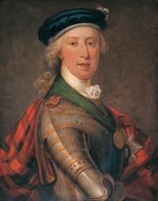

Tearlach Stiùbhard
Charlie Stuart
N° 147 In the Patrick McDonald Collection
First published 1784
Tune(Oran Luadh="waulking song")
Sequenced by Ch.Souchon


A Gaelic text to this tune exists.
Note from William Matheson's copy of the Patrick MCDonald Collection
"McDonald Collection of Gaelic Poetry 225: story and song 304".
The collection referred to is an important selection of chorus songs , mainly from Barra and Uist, which was published by Rev Angus and Rev Archibald MacDonald in Inverness in 1911.
Rev William Matheson (1910 - 1995) served as a Lecturer, Senior Lecturer and Reader in the Department of Celtic Studies from 1952 until 1980 at Edinburgh University
Il existe des paroles gaéliques pour ce chant.
Note de William Matheson apposée sur son exemplaire de la collection de Patrick McDonald
"McDonald Collection of Gaelic Poetry N° 225: histoire et chant p 304".
Cette collection est une importance sélection de choeurs, collectés principalement dans les îles de Barra et Uist et publiés par deux pasteurs, Angus et Archibald McDonald en 1911.
Le Révérend William Matheson (1910-1995) fut Chargé de conférence et Maître auxiliaire au Dépatement des Etudes Celtiquesde l'Université d'Edimbourg de 1952 à 1980.
On the 21st of September Charles sent his father a letter quoted hereafter in excerpts, showing
his generosity and profound humanity
:
"If I had obtained this victory over foreigners, my joy would have been complete; but as it is over Englishmen, it had thrown a damp upon it that I little imagined. The men I have defeated were your majesty's enemies, it is true, but they might have become your friends and dutiful subjects when they had got their eyes opened to see the true interest of their country, which you mean to save, not to destroy...
"Tis hard my victory should put me under new difficulties which I did not feel before, and yet this is the case. I am charged both with the care of my friends and enemies. Those who should bury the dead are run away, as if it were no business of theirs. My Highlanders think it beneath them to do it, and the country people are fled away. However, I am determined to try if I can get people for money to undertake it, for I cannot bear the thought of suffering Englishmen to rot above the ground.
" I am in great difficulties how I shall dispose of my wounded prisoners. If I make a hospital of the church, it will be lookt upon as a
great profanation
, and of having violated my manifesto, in which I promise to violate no man's property. If the magistrates would act, they would help me out of this difficulty. Come what will, I am resolved not to let the poor wounded men lye in the streets, and if I can do no better, I will make a hospital of the palace and leave it to them..."
The sentence about "the great profanation" alludes to the clergy's hostile attitude:
Charles had sent messengers on the evening of the battle, to the different ministers, desiring them to continue their ministrations as usual; but although the church bells were tolled at the customary hour, next morning, and the congregations assembled, one only of the city clergymen appeared.
Another clergyman continued to pray as usual for King George and expressed a hope that God would take Charles to himself, and that instead of an earthly crown, he would "give him a crown of glory". Charles is said to have laughed heartily on being informed of the minister's concern for his spiritual welfare. The last verse of the song
"If you had seen my Charlie"
shows how these intimations were received even by less educated flocks...
Le 21 septembre Charles écrivit à son père une lettre dont voici 2 extraits qui montrent
sa générosité et sa profonde humanité
:
"Si j'avais obtenu cette victoire sur des étrangers, ma joie eût été complète; mais l'dée que c'est sur des Anglais y a mêlé plus d'amertume que j'imaginais. Les hommes que j'ai vaincus étaient les ennemis de Votre Majesté, sans doute, mais ils auraient pu devenir vos amis et loyaux sujets, lorsqu'ils auraient ouvert les yeux et vu le véritable intérêt de leur pays que vous voulez sauver et non détruire...
"Malheureusement la victoire apporte des embarras que je ne connaissais pas encore. Je suis chargé d'avoir soin de mes amis et de mes ennemis. Ceux qui devraient ensevelir les morts se sont enfuis, comme si celà ne les regardait pas. Mes Highlanders croient en dessous d'eux de le faire et les paysans se sont retirés. Cependant je suis résolu à voir si en payant je puis avoir des hommes qui se chargent de cette triste fonction, car je ne saurais supporter l'idée de laisser des Anglais pourrir sur la terre.
"Je suis très embarrassé sur ce que je dois faire de mes prisonniers blessés. Si je fais un hôpital de l'église (presbytérienne), on se récriera sur cette
grande profanation
et l'on dira que je manque à mon manifeste, par lequel je m'étais engagé à ne violer aucune propriété. Si les magistrats voulaient s'en mêler, ils m'aideraient à sortir de cette difficulté. Advienne que pourra, je suis décidé à ne pas laisser les pauvres blessés dans la rue? et si je ne peux mieux faire, je convertirai le palais en hôpital pour le leur abandonner..."
La phrase au sujet de "la grande profanation" fait allusion à l'attitude hostile du clergé anglican:
Charles avait envoyé des messagers aux divers pasteurs de la ville, le soir de la bataille, les invitant à poursuivre leur ministère comme à l'accoutumée. Mais bien qu'on eût sonné les cloches à l'heure habituelle et que les fidèles se soient réunis, un seul pasteur se présenta à l'office. Un autre pasteur continua de prier pour le roi Georges et formula l'espoir que Dieu veuille rappeler à lui Charles pour lui décerner, non pas une couronne terrestre, mais une couronne de gloire". Charles s'amusa beaucoup, dit-on, de la sollicitude de ce saint homme. La dernière strophe du chant
"If you had seen my Charlie"
en dit long sur l'intérêt que même les fidèles les moins évolués portaient à ces prêches...